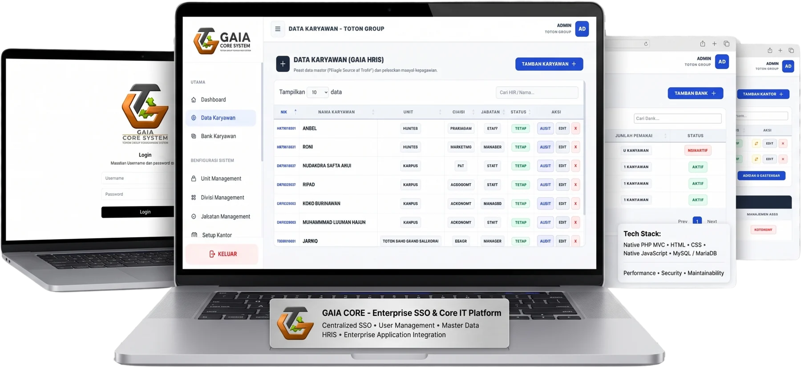
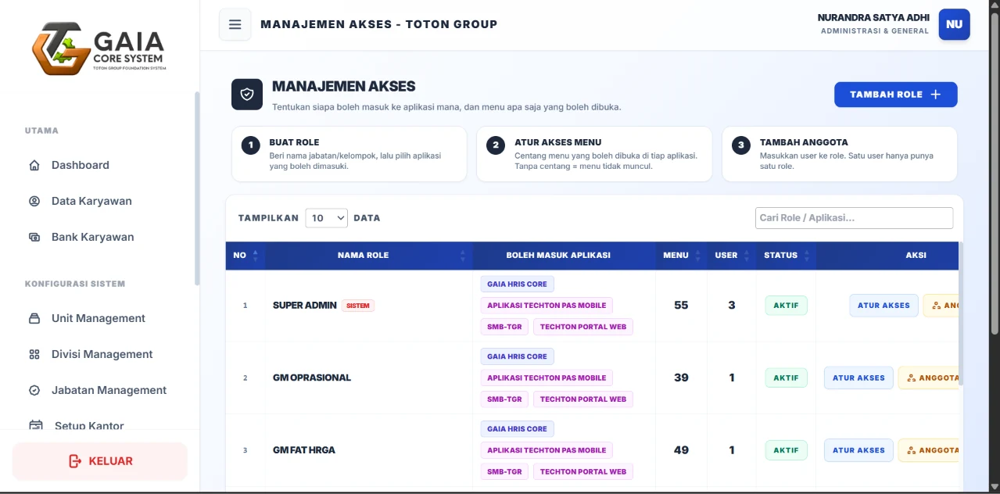

Enterprise · SSO · RBAC
Gaia Core & Enterprise HRIS
The identity and access backbone of the company: one internal platform for employee master data, user identity and Single Sign-On across every application.
- Single Sign-On (SSO)
- Role-Based Access Control (RBAC)
- OAuth 2.0 / OpenID Connect
- Master User Management
- HRIS Integration
- Audit Trail
- Dynamic Application Management
My contribution Designed in Figma and built from scratch on a PHP MVC architecture: database schema, REST API, access management UI, secure Excel/CSV import and export, security hardening, documentation and black box testing.
- PHP (MVC)
- MySQL / MariaDB
- REST API
- OAuth 2.0 · OIDC
- Figma